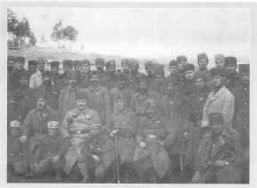

Kazım Karabekir Paşa,Yeşil Ordu meselesinde ismi en çok geçen kumandanlardan biriydi. Fotoğraf paşanın Erzurum Doğu Cephesindeki bir ziyaretini yansıtıyor. Fotoğraftaki yaşı küçük askerler, paşanın bakımını üstlendiği şehit çocuklarıdır.